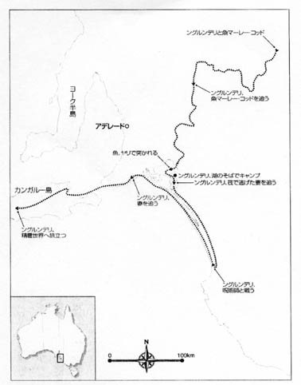

第一章 アボリジニーと神秘的な世界
５、神話とそれを意味する「ドリーミング」の真意
これは南オーストラリアにあるオーストラリア最大のマレー川下流に
住むヤラルディ族に伝承される精霊ングルンデリの天地創造の物語だ。
ングルンデリは巨大な魚マレーコッド（鱈）を追いカヌーで川を下っ
ていった。その魚が尾を振り、泳ぐたびに小さかった川の幅は広がって
いった。ングルンデリは疲れたので、休息をとった。その間に魚は逃げ
てしまった。彼は兄弟のネペルのことを思い出し、湖に向かって再びカ
ヌーを漕ぎ出した。ネペルは赤い崖の上に座っていたが、急いでカヌー
をあやつり湖にいた魚をやりで捕まえた。後で来たングルンデリと一緒
に魚を小さく切り刻み水の中に投げ入れた。ひとつひとつ肉片を投げ入
れるたびに名前をつけた。そして最後の肉片に「マレーコッドになれ」
と叫んだ。
ングルンデリの旅は続いた。彼はバムンダングの地に上陸した。カヌ
ーをかついでラルランガンジェルの土地を歩いた。そして紫貝の仲間を
二つ残し、いらなくなったカヌーを天に押しつけたらカヌーは天の川に
なった。
ングルンデリには二人の妻がいたが、妻たちは女性が食べることを禁
じられていたコイの仲間をグレルバンの地で料理していた。風に乗った
においを感じたングルンデリは急いで妻たちを追いかけた。それに気づ
いた妻たちはあわててアシの筏（いかだ）で対岸のタラルラムへと逃げ
た。ングルンデリもアシの筏を作り、後を追い、妻たちが向かったクー
ロンの地へと急いだ。その途中パッランバリという精霊に出会い、妻た
ちの行方を聞いた。精霊は悪霊で、彼の太ももを槍で突いてきた。結局、
ングルンデリはこん棒で精霊を殺し、積み上げたユーカリの木に火をつ
けて、精霊を燃やしてしまった。
妻たちを探すことはあきらめたングルンデリは、一度家に戻ったが再
び旅に出た。ある日、潮が引きカンガルー島まで歩いて渡れることにな
った。彼はそこを歩いている妻たちを見つけた。怒った彼は妻たちに向
かって、「海に落ちろ」と叫んだ。その時に、突然水位が上がり妻たち
は溺れ死んだ。
島に着いたングルンデリは、カシュアリナの木を生えさせ、その下で
休んだ。そして、西側の海に持っていた槍を投げ捨てた。槍は長い岩と
なった。彼は海で自分の身体を洗い流し天へと昇った。そして、人々に
「お前たちが死んだら、その魂は私がつくった道をたどり、精霊の世界
で私と共に暮らすのだ。」という言葉を告げた。
以上がングルンデリの物語だ。ングルンデリは旅を通じて、マレー川
をつくり、天の川をつくり、岩をつくった。そしてそれぞれに命を吹き
込んだ。このドリーミングを聞いて育った子供たちは、ひとつの岩、ひ
とつの川を見ても、そこに祖先によって与えられた命を思うことができ
る。同じく祖先によって吹き込まれた自分たちと同じ命が流れていると
感じることで、川や岩を大切にしたい気持ちが生まれるである。岩や川
はただの物体ではなくエネルギーを持っているのだ。
このドリーミングを通じて、死とは肉体という衣を脱ぎ捨てることで
あり、人は魂という永遠の命を持っていることを学ぶのだろう。悪い精
霊を槍で殺し、その後、火で焼くという話からは、肉体と魂の両面から
の死を意味していると解釈することができる。まず、槍で肉体を殺し、
火で焼くことで魂を殺す。そして最後に残るのは魂のほうなのだ。
この神話の中には重要な掟が語られている。女性が食べることを禁止
されていた魚を食べたとして溺れ死ぬのは、アボリジニー社会歴然とし
て存在する男女の境界を越えた掟破りへの警告として理解することがで
きる。与えられた自然環境のなかで狩猟採集民として生きてきたアボリ
ジニーにとっては、限られた食料供給の条件を生きのびる規則が必要だ
った。性別や年齢、食物のタブーなどの逸話を通して、アボリジニーは
掟を守ることの大切さを学んだのだ。男女の役割分担が明確なアボリジ
ニー文化では、特に成人儀礼に関して互いに異なる神話を持ち、それぞ
れの領域に立ち入ることは許されない。その性別の掟を破ったものには、
罰を科せられるなどの神話も多く残っている。女性は母なる大地と同じ
命を生み出し、命を育む役割がある。男性は命を生み出せない分、儀式
を通じて、大地との一体感を体得するのだ。そして体を傷つけたりする
成人儀礼イニシエーションを通じて、女性や子供たちを守る男性として
の役割を身につけていくのである。
図１６：精霊ングルンデリの旅の道すじ

もうひとつ土地と人々の関係を説明しているものにアボリジニー、ウヌ
ウン族の埋葬の仕方がある。創生の精霊がつくりあげ祖先が暮らしてきた
故地は、アボリジニーの人たちにとって大変重要である。ガマディ村のリ
ーダー、ウヌウン氏の話によるとこうだ。
人が亡くなると、アボリジニーは遺体を土に埋葬する。これが一回目の
葬送で、それから二、三ヵ月後遺体を掘り出し、その骨を拾い集め、死者
が生きていたときと同じように、すべての骨を足のつま先から頭骨まで順
に樹皮の上に並べる。その骨を中空にした丸太の柩に入れるのが二回目の
埋葬だ。やがて骨は雨に洗われ大地にもどるが、死者の魂はなおそこにと
どまっている。遺体を離れた血と汗はあたりをさまよい、やがて地中を通
って故地の中に精霊が作り出した神聖な泉、ブラウィリへいく。その血と
汗を追って魂はブラウィリへ行く。
ウヌウン氏の話によると、ジナン族の人々は死者のために二度葬送の儀
礼を行う。一回目は肉体のためのものであり、二回目は骨のための葬送で
ある。しかしこの骨は柩に入れられたままその場所で大地に戻る。つまり
骨は動けないが、これに対し死者の体(骨を含めた肉体)にやどった魂と血
と汗とは、二度目の葬送のあとあたりをさまよい、やがて血と汗は神聖な
泉へ向かう。それを追って魂もその泉へ向かい、精霊となってそこで過ご
すことになる。つまり神聖な泉をもつ故地は、血と汗に導かれた祖先の祖
霊がやがて精霊となって暮らす土地だということになる。故地には、精霊
となった彼らの祖先が暮らしているのである。こうした思想はガマディ村
の人々の日常生活の中で具体的なかたちをとっている。彼らは魚釣りをす
るとき、曽祖父や祖父の精霊に魚がたくさんとれるように呼びかけている。
故地に暮らし神話を語り続ける人々にとって、そのひとつひとつの神話は、
遠い昔の物語ではなく、人々の生活に密着した現実的で実体のあるものな
のである。
ドリーミングとは、大自然とそこに育まれる、人間を含むすべての生命
体とをつなぐ魂の物語だ。そして私たちに「全体として生きる」ことの大
切さを教えてくれる。個々の生命体は、その尊さでは同じ重さであり、互
いに助け合いながら存在している。すべての自然現象、動植物、鉱物、人
間が共に生きていく絆を説くのがドリーミングなのだ。ドリーミングに登
場する先祖たちは、どうすれば人間が自然や他の生命体と調和して生きて
いけるのかということを私たちに教えてくれる。アボリジニーにとって、
ドリーミングに伝えられていることこそ人間が一番幸福に暮らせる方法で
あり、世界の調和が保たれる道なのである。
|